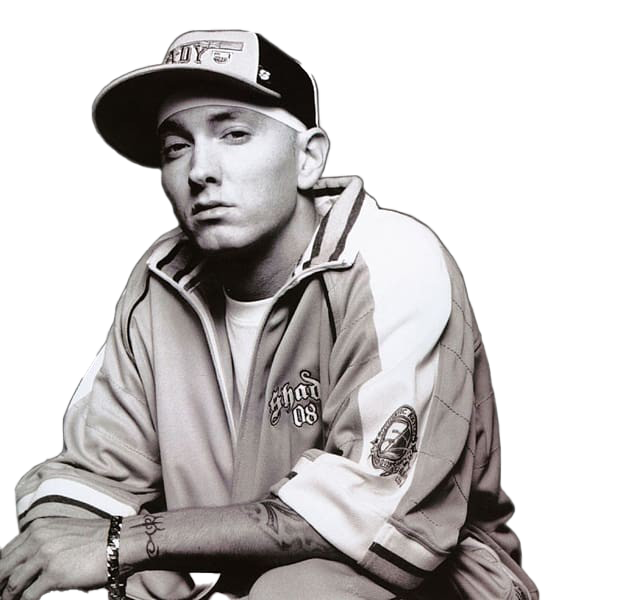

EMINEM / SLIM SHADY
THE RAW RISE OF MARSHALL MATHERS
The concrete streets of Detroit witnessed the brutal birth of an absolute rap icon. Marshall Mathers did not just walk into the game; he smashed the gates open with raw rage and unmatched lyrical violence. Growing up behind the desolate boundaries of 8 Mile Road, his early days were defined by poverty, constant bullying, and a chaotic family environment that fueled an intense inner fire. In a predominantly Black underground battle scene, a white kid spitting venomous rhymes faced immense skepticism, but his relentless stamina turned doubts into absolute fear among opponents.
His alter ego, Slim Shady, became the ultimate vessel for his darkest thoughts and unvarnished realities. Songs like Kim and Guilty Conscience pushed legal and social boundaries to their absolute limits, causing massive moral panic across the globe. Lawsuits from his own mother, intense government scrutiny, and threats of censorship or imprisonment loomed heavily over his head during the late nineties. He was viewed as a dangerous threat to society, yet this exact chaotic rebellion cemented his status as the voice of a frustrated generation that refused to be silenced.
The crisis years brought him to the absolute brink of destruction. The immense pressure of global fame, combined with deep personal losses and a severe addiction to prescription drugs, nearly cost him his life. He faced a critical overdose that almost shut his system down permanently. The rap world watched in absolute silence as its most brilliant weapon struggled to survive his own internal demons. Yet, the grit of the Detroit streets ran too deep in his veins to let him fade out as another tragic statistic in the history of music industry casualties.
His resurrection was nothing short of legendary. Returning with absolute clarity and a renewed lyrical ferocity, albums like Recovery and The Marshall Mathers LP 2 proved that his skill set was entirely untouchable. He transformed his personal trauma, addiction battles, and endless rage into stadium-shaking anthems that broke global sales records. He transformed from a controversial underground street battler into an untouchable global icon, earning Academy Awards and multi-platinum plaques while retaining his uncompromisingly aggressive street identity.
Today, his legacy stands as an unbreakable monument of pure survival, immense technical precision, and raw street rebellion. He completely redefined the global sonic landscape of hip-hop, proving that no matter how dark or dangerous the origin story begins, absolute lyrical dominance can conquer the world. From the dusty, violent rap battles in the hip-hop shops of Detroit to the peak of the worldwide music hierarchy, his journey remains the blueprint for ultimate raw success against all human odds.